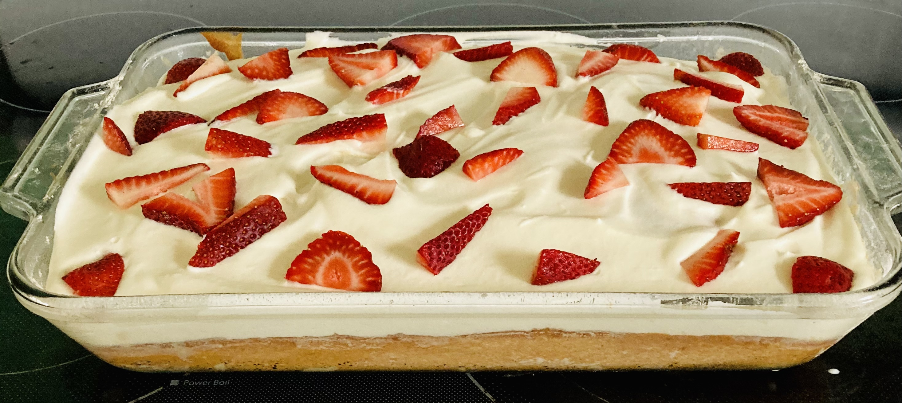

Tres Leches Cake
Home

Ingredients
- 1 tablespoon vegetable shortening, or as needed
- 1 (15.25 ounce) package yellow cake mix
- 3 eggs
- 1 cup of cold water
- 1/4 cup of vegetable oil
- 1 teaspoon of vanilla extract
- 1 (12 fluid ounce) canned evaporated milk
- 1 (14 ounce) canned sweetened condensed milk
- 1 cup half and half
- 1 cup heavy whipping cream
- 1 tablespoon white sugar, or to taste
- 1/2 teaspoon vanilla extract
Directions
- Preheat oven to 350 degrees F (175 degrees C). Generously grease a 10x15-inch baking pan with vegetable shortening.
- Combine yellow cake mix, eggs, water, vegetable oil, and 1 teaspoon vanilla extract in a large mixing bowl. Beat with electric mixer until very smooth, scraping down the sides of the bowl as needed. Scrape batter into the prepared baking pan. Smooth the top of the batter, shake pan, and tap lightly on counter 2 or 3 times to eliminate air bubbles.
- Bake in the preheated oven until a toothpick inserted in the middle of the cake comes out clean, about 22 minutes. Let cake cool in the pan at least 30 minutes. Poke holes all over the cake with a bamboo skewer or the handle of a wooden spoon.
- Combine evaporated milk, sweetened condensed milk, and half-and-half in a large bowl; slowly pour milk syrup all over the cake. Syrup will soak into cake. Wrap cake with plastic wrap and refrigerate at least 3 hours (or preferably overnight).
- Whip cream with sugar and 1/2 teaspoon vanilla in a large bowl with an electric mixer until cream is fluffy; spoon whipped cream over cake.